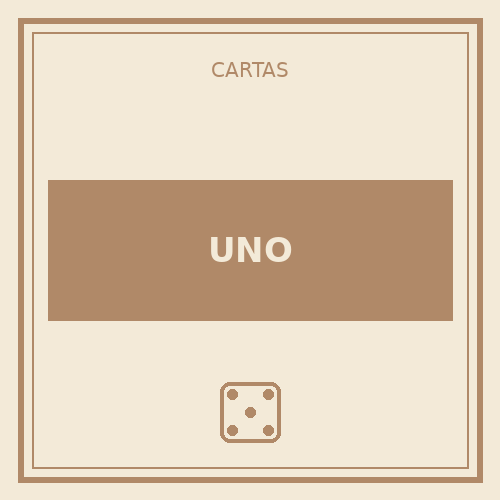
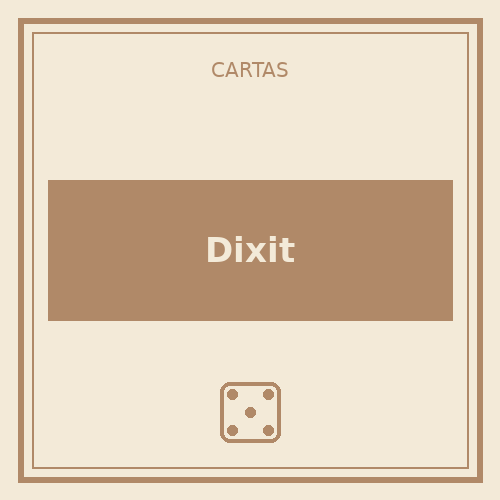
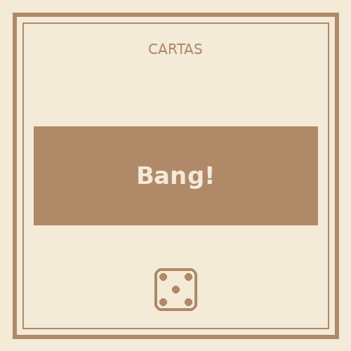

UNO
2-10 jugadores · 15-30 min
El infaltable de cualquier reunión. Reglas simples, ritmo ágil y esa dosis de caos cuando aparecen las cartas de +4 que lo hacen tan divertido como polémico.
Descargar reglamento (PDF)Partidas rápidas y dinámicas para cualquier grupo.

2-10 jugadores · 15-30 min
El infaltable de cualquier reunión. Reglas simples, ritmo ágil y esa dosis de caos cuando aparecen las cartas de +4 que lo hacen tan divertido como polémico.
Descargar reglamento (PDF)
3-6 jugadores · 30 min
Un juego de asociación e imaginación con ilustraciones preciosas. No hay respuestas correctas fijas, así que funciona muy bien para romper el hielo en grupos mixtos.
Descargar reglamento (PDF)
4-7 jugadores · 20-40 min
Duelos del lejano oeste con roles ocultos. La paranoia de no saber quién es aliado y quién es forajido genera mesas muy ruidosas y entretenidas.
Descargar reglamento (PDF)